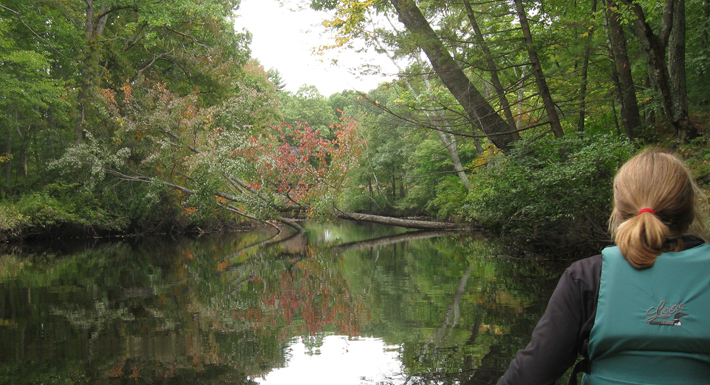
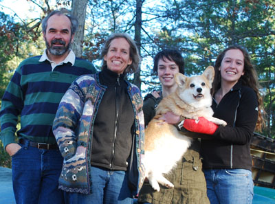
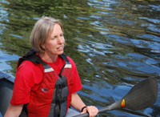
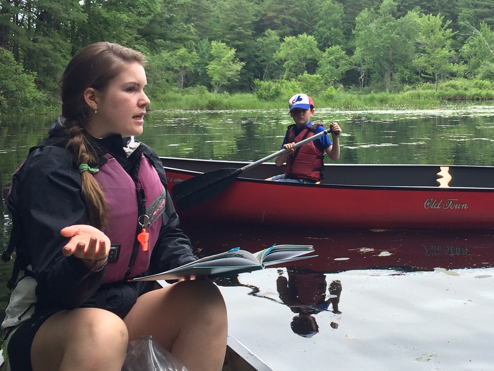
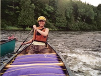
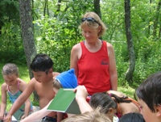
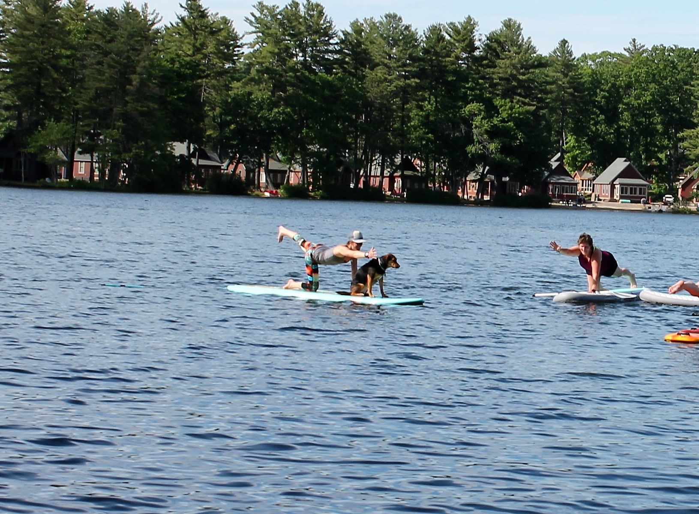

About Us
 THE OWNERS, a note from Diane. My husband, two daughters, and I moved to Groton in 1993 and immediately fell in love with the beautiful rivers and conservation lands in the area. These places have become such an integral part of our lives and we have grown to know them well over the years. In 2009, after managing Nashoba Paddler for 13 years, I and my husband, Pete, purchased Nashoba Paddler with the hopes of continuing its mission to introduce people to the river and to responsible paddling. We feel so fortunate to be part of this river community and invite you to join us in experiencing the beauty, the peace, and the fun that a day on the river provides.
OUR LOCATION on the NASHUA RIVER. Our riverside rental base is located on a friendly, forested flatwater section of the Nashua River where it's common to see turtles, blue herons, muscrats, beaver, osprey, and an occasional mink, owl, deer, or even bald eagle! The fishing is excellent. You can paddle for hours in either direction enjoying the surrounding conservation land.
A trip to Nashoba Paddler is not only a recreational outing, but also an opportunity for adults and children to learn something about the river environment! Our changing educational display provides information about river creatures and about issues affecting the river. Look though field guides to learn about what you just saw during your trip. Read the award-winning children's book, A River Ran Wild, about the amazing environmental history of the Nashua River as it transitioned from a pristine waterway inhabited by Native Americans to a severely polluted dead river and back to a beautiful fishable and swimmable river.
OUR MISSION. We are a small, family-owned, family-friendly business. Our goals are two-fold; first, to get people out on the river so that they can connect with nature and the river environment and become educated stewards; and second, to promote paddlesports as an activity that can be enjoyed at any age. Now in our 24th season, we are dedicated to furthering river education and protecting the environment. In 2009, owner, Diane Carson was recognized at the Nashua River Watershed Association's 40th Anniversary celebration for representing "the kind of work that has gone on each day over the past 40 years to protect the natural resources of the Nashua River watershed." In 1997, Neal and Gail Menschel, of Nashoba Paddler, received the Nashua River Watershed Association's Greenway Award for "helping people to fall in love with the river and become educated stewards."
OUR HISTORY. Nashoba Paddler, LLC is owned by Diane & Peter Carson. Nashoba Paddler was founded by Neal and Gail Menschel in 1992, offering rentals, tours, and instruction. Diane began managing the business in 1996 and shared their hope for the future of Nashoba Paddler. They had a vision of a business that would introduce people to the beauty of the Nashua River in hopes that they would fall in love with it and become active stewards. It grew beyond just a rental business as the ideas of River Camp and River Classroom were brought to fruition. In 1998 River Classroom was given to the Nashua River Watershed Association to be part of their educational mission and the two organizations have continued to partner to provide watershed education canoeing field trips to hundreds of students and chaperones every year. River Camp continues to be a popular and successful summer experience for youth, ages 6-17, getting kids outside on the water, having fun adventures, and learning about nature.
OUR EQUIPMENT. We have a variety of Old Town canoes and kayaks and BIC stand-up paddleboards (SUP's). Our solo and tandem recreational kayaks are stable and maneuverable and our sit-on-top kayaks are set up for fishing. Our recreational canoes are also very stable and can accomodate three adults or two adults plus two children. We also have a couple of giant family canoes that hold six people. Our SUP's are great for beginners and accommodate a range of weights. We provide comfortable life vests and paddles for all ages.
OUR STAFF. Our rental staff is made up of paddling enthusiasts who are committed to the environment. They are known for their friendly, personal service, and are happy to share what they know and love about the Nashua River and about canoeing, kayaking, and paddleboarding, including safety and paddling tips. Our qualified guides, instructors, and camp leaders possess various paddling and safety certifications and are personable, knowledgeable naturalists that can provide a very enriching paddling experience.
 Our Guides/Instructors
Our Guides/Instructors 

Diane Carson is Co-Owner of Nashoba Paddler, LLC and Director of River Camp. She has been an American Canoe Association (ACA)-certified canoeing instructor since 1998 with training in Swift Water Rescue and Adaptive Paddling. She is a Wilderness First Responder and has a degree in biology. Diane loves having the opportunity to connect children and adults to the river environment by encouraging exploration and discovery.

Rachele Carbutt, River Camp Program Director/Leader. Rachele graduated from Mount Holyoke College with a BA in Environmental Studies and loves helping kids to experience nature through canoeing and environmental enrichment. Seeing kids grow through camp and master whitewater techniques is a passion she has found through her experience at Nashoba Paddler. She has worked for Nashoba Paddler since 2011 and was a camper for 6 years before that. She has CPR/First Aid and ACA Level 3 Canoe Instructor certifications.

Alden Chadwick, River Camp leader. Alden is a veteran science teacher in Groton with an M.S. degree in science education. Alden received the 2012 Environmental Education Award from the Nashua River Watershed Association. He has been with River Camp since its inception in 1997 and really knows how to make science fun! He is certified in Lifeguarding, CPR, and First Aid.

Stacey Chilcoat, River Camp leader and the Nashua River Watershed Association's River Classroom Director. She has been involved with Nashoba Paddler and River Camp since 1998, leading trips and sharing her knowledge of the watershed. She has a degree in biology, has been an ACA-certified canoeing instructor since 1998 with training in Swift Water Rescue, and is certified in CPR and First Aid.
Josh Dietrich, River Camp Aquatics Director.

Shelley Grove, Assistant Manager for Nashoba Paddler and River Camp leader. She is a preschool teacher in Groton and believes it is important to get kids outside in nature. She has a degree in recreation, is certified in CPR and First Aid, and has been an ACA-certified canoeing instructor since 2002. Her goal is to open people's eyes to the wonder of rivers.

Bert Hogan, River Camp leader and River Classroom guide. A naturalist with expertise in birds, Bert has a special talent for getting kids excited about nature. He holds certifications in Lifeguarding, CPR, and First Aid. He has also been an ACA-certified canoeing instructor since 2011.

Kristen Lamarre, SUP Instructor and SUP Yoga Instructor. Kristen's biggest passions lie in helping others connect to themselves and the natural world through yoga and SUP. Kristen is a certified SUP instructor through the Professional Stand Up Paddleboard Association. She holds certifications in CPR and First Aid. .

Pete Carson, is Co-Owner of Nashoba Paddler. An outdoor enthusiast, he is a member of the AMC Four Thousand Footer Club and on the board of directors of the Squannacook Greenways 501C. He holds certifications in CPR, and First Aid. He has been an ACA-certified kayaking instructor since 2014.